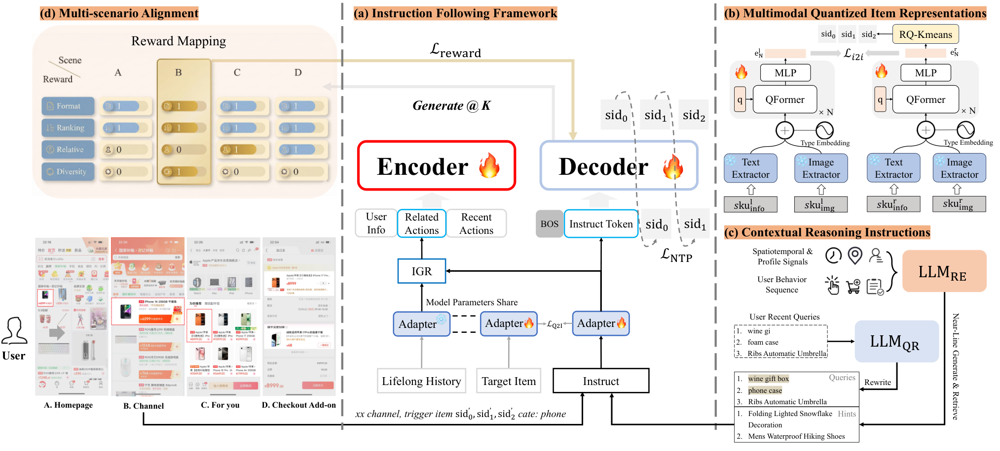

目录 · 9 节
1它到底在解决什么问题？2整体流程：一个生成器加两块训练信号3一千个候选怎么放在一起排？4为什么还需要 WSFT 和 PermPO？5广告的钱为什么要拆成训练和上线两半？6结果说明了什么7我认为它的局限8一个推荐团队可以怎么试9值不值得读淘宝的生成式排序框架 UGR 让一个生成模型直接排出用户最后看到的那一屏：一次请求里约一千个自然内容、广告和其他业务的候选一起交给它，逐个生成最终列表，不再由各业务先各自排好、再交给混排拼接。拼接这一步正是原来的毛病：生成模型排好的列表被混排插进别的内容，位置和上下文都变了，模型学到的“谁接在谁后面”就不成立了。训练时 UGR 不只模仿曝光过的序列，还按曝光后的点击和成交给样本加权，并让模型学会比较两种排列哪种更好；广告部分沿用现有的分配规则和广告竞价（GSP）计价规则。在猜你喜欢的线上 A/B 中，成交量提升 3.29%，GMV 提升 2.10%。同一个模型只排自然内容、再交给原来的混排，成交量只涨 2.84%，差出来的部分就是统一生成本身的收益。做电商推荐重排、尤其是一屏里混着广告和多个业务的团队值得读：生成结构和偏好训练都是已有思路，UGR 的贡献是让生成的列表就是最终那一屏，并且能在现有的广告竞价规则下上线。
它到底在解决什么问题？
先看一个示意场景。用户打开首页猜你喜欢，这一屏有 4 个位置。自然内容的生成式排序已经排好了 4 件商品，接着混排把一条广告和一个其他业务的卡片插进来：
| 示意 | 位置 1 | 位置 2 | 位置 3 | 位置 4 |
|---|---|---|---|---|
| 生成模型给出的自然列表 | 跑鞋 A | 运动袜 B | 护膝 C | 水壶 D |
| 混排后的最终列表 | 跑鞋 A | 广告：跑鞋 X | 其他业务：直播卡片 Y | 运动袜 B |
生成模型在排运动袜 B 时，前提是它紧挨在跑鞋 A 后面。混排之后，B 被挤到第 4 位，前面多了一双竞品跑鞋和一个直播卡片。模型按"A 后面接 B"学到的上下文已经不成立了，而真正决定这一屏的混排并不懂这些商品之间的关系。
论文把这个错位放在第一位，并提出直接在整个请求的跨业务候选集上生成最终列表。要做到这一点，还得解决三件事。第一，一个请求有约一千个候选，业务不同、特征不同，必须在线上延迟内把它们放在一起建模。第二，日志里的曝光序列是旧的排序策略排出来的，只模仿它学不到用户真正喜欢什么。第三，广告要按 GSP 竞价计价，生成模型不能破坏现有的竞价规则。
整体流程：一个生成器加两块训练信号

整个系统可以按数据流分成四段：
| 阶段 | 输入 | 输出 |
|---|---|---|
| 请求编码 | 用户属性、请求上下文、历史行为 | 一个请求上下文 token |
| 候选编码 | 上游给的约 1000 个跨业务候选 | 每个候选一个已和其他候选交互过的向量 |
| 逐位解码 | 已选出的前缀 | 剩余每个候选在下一个位置的分数 |
| 线上搜索 | 推荐分 + 当前广告 eCPM | 4 个候选列表，交给现有评估器挑一个 |
关键分工是：生成器只负责用户会不会喜欢，当前出价只在线上才加进来。训练时日志里的历史 eCPM 只交给一个单独的去偏塔，生成器看不到。下面拆开讲。
一千个候选怎么放在一起排？
不同业务的候选先过同一个 MLP，变成同一空间里的向量。输入除了商品本身的特征，还有业务类型，以及上游召回和打分阶段给出的预估分和排序信号。这样广告和自然商品可以直接比，又保留了它们来自哪个业务的信息。
接着要让候选彼此"看见"，因为一件商品值不值得放上来，取决于同一请求里还有哪些候选可选。一千个候选两两做 attention 要算约一百万对，线上扛不住。UGR 用低秩候选 attention：用一个可学习的投影矩阵，把一千个候选的 key 按 8 组不同的权重加权求和，得到 8 个摘要 key，value 也照样压成 8 个。每个摘要相当于全体候选的一种加权平均，权重在训练中学出来。每个候选的 query 只和这 8 个摘要做 attention，就能间接看到这次请求全部约一千个候选的情况。计算量从约一百万对降到约八千对。这一步每个请求只算一次，后面所有解码步和搜索路径都复用。 Hoot 说

- 两两 attention：1000 × 1000，约一百万对。低秩：1000 × 8，约八千对；摘要每个请求只算一次，后面所有解码步复用。
- 手算一个摘要（示意，4 个候选的 key 记作 1、2、3、4）：权重 0.4、0.3、0.2、0.1 合成 2.0；权重 0.1、0.2、0.3、0.4 合成 3.0。
UGR 的贡献是把广告和自然商品放进同一个生成式排序里一起排，一个请求约一千个候选。低秩候选 attention 用一个可学习的投影矩阵把全部候选的 key、value 压成 8 个摘要，每个候选只和摘要做 attention。论文没有交代候选换序或数量变化时这些权重怎样对应。 出处: 示意例子，对应论文 §3 低秩候选 attention
解码序列的开头是用户最近会话的几个 token（论文叫 session token），由当前会话的上下文特征编码而来。训练和线上搜索时，解码器都从这几个 token 开始。它们和前面那个请求上下文 token 分工不同：session token 放在解码序列里，请求上下文 token 只通过 cross-attention 被读取。之后每选出一个候选，就把它的向量接到序列后面。每一步，解码器用 causal self-attention 处理已选的前缀，再用 cross-attention 读请求上下文 token，得到这个位置的状态向量，再经过这个位置专属的一个投影，变成打分用的向量。候选的分数是这个打分向量和候选向量的余弦相似度乘一个可学的缩放系数，然后只在还没被选的候选上做 softmax。候选之间的关系在编码阶段已经算好，解码时每一步只需要回答一个问题：在已经放了这些商品的前提下，下一个位置放谁。
为什么还需要 WSFT 和 PermPO？
只用 NTP 训练，模型学到的是旧系统会怎么排，而不是用户喜欢什么。UGR 在 NTP 之外加了两个目标，用的是同一份反馈分：点击或浏览超过 3 秒记 1 分，成交再加 2 分。
第一个目标叫 WSFT，做法是给每个曝光物品的 NTP 损失乘上这个反馈分。曝光序列本身不变，只是用户有反应的位置被学得更重。看一个示意：一条曝光记录里，跑鞋 A 被点了，运动袜 B 被点了也成交了，护膝 C 和水壶 D 什么都没发生。A 的反馈分是 1，B 是 3，C 和 D 是 0。NTP 仍然给四个位置各算一份损失，WSFT 再按 1、3、0、0 加一份，所以 B 这一步的预测被学得最重。没人点的 C、D 不会因此被丢掉，NTP 还在学它们。
WSFT 只改变每一步学多重，并不比较不同的排法。PermPO 补上这一块：把同一请求里曝光过的这 4 件商品换成各种排列，拿反馈分当 gain，算每种排列的 DCG。沿用上面的示意，日志顺序 A、B、C、D 的 DCG 约为 ，把 B 提到第一位后约为 。于是"B 在前"这一排列就比日志顺序更好，组成一对偏好。
这里 是生成器给整个排列的对数概率，每一步都只用生成器自己的 logit 做 softmax，不加去偏塔的修正，这样偏好信号直接作用在线上用的那个生成器上， 是 DCG 更高的那一个。直觉和 DPO 一样：让模型给好排列的概率高于差排列。DCG 相同的排列不配对，所有反馈都是 0 的请求不贡献损失。偏好对只由同一批曝光物品的不同排法组成，不会把没曝光的候选排进去；不过每一步的概率仍然是在全部未选候选上做 softmax 算出来的。三个损失直接相加，WSFT 的权重是 1，PermPO 的权重是 15。
广告的钱为什么要拆成训练和上线两半？

线上的规则是总分等于推荐分加上 乘以广告 eCPM。这里的推荐分就是前面那个缩放后的余弦相似度，也就是生成器的 logit，而不是 softmax 之后的概率。这个总分决定广告能不能上、上在哪一位。问题出在训练数据上：日志里高出价的广告更容易被曝光，这是旧的竞价规则造成的。如果生成器直接拟合曝光，它会把"这条广告出价高"误当成"用户喜欢它"，学进推荐分里。上线时再加一次 eCPM，出价就被算了两遍。
UGR 的做法是给训练加一个小塔，输入是广告特征和日志里的 eCPM，输出是加在广告分数上的一个修正值，非广告的修正是 0。训练时修正值加在生成器 logit 上，再在合法候选上做 softmax，模型用这个分布去拟合曝光，和出价有关的那部分曝光倾向由塔来解释。生成器本身拿不到 eCPM 和竞价特征。上线时把塔整个拿掉，只用生成器分数，再加上当前的 eCPM。
上图里能看到效果。去掉塔时，生成器分数和 eCPM 的相关系数是 0.195；加上塔后变成 −0.313，而塔的修正值和 eCPM 的相关系数是 0.727。这说明和出价相关的部分主要由塔分担了；生成器分数并没有变得和出价无关，而是转成了负相关，这一点放到局限里再说。
线上用每一步的总分（生成器 logit 加 乘当前 eCPM）做多路搜索，相当于宽度为 4 的 beam search：每一步把保留下来的每个前缀接上每个合法候选，路径分是各步总分之和，所有扩展放在一起排，只留前 4 条。4 步之后得到 4 个 4 件商品的列表，交给原来的下游评估器挑一个曝光。论文称广告部分沿用现有的分配和 GSP 计价规则，但论文没说下游评估器选出最终列表后，搜索中每一步的广告竞争怎样对应到最终曝光位置和实际 GSP 扣费。
结果说明了什么
两个离线数据集来自猜你喜欢连续 30 天的日志，对应两种用户意图不同的场景，每个样本都带着上游给的完整候选集，不截断、不采样，所以离线评测和线上面对的是同样规模的候选。下面是场景 1 的部分结果，IPV 指点击或浏览超过 3 秒：
| 模型 | Hitrate | IPV NDCG | IPV MAP | CVR NDCG | CVR MAP |
|---|---|---|---|---|---|
| GReF | 0.5310 | 0.3459 | 0.2926 | 0.5274 | 0.4744 |
| UniRank | 0.5668 | 0.3496 | 0.2802 | 0.4514 | 0.3650 |
| DEGR | 0.5267 | 0.3474 | 0.2947 | 0.5314 | 0.4773 |
| UGR | 0.5295 | 0.3666 | 0.3169 | 0.5394 | 0.4871 |
UGR 在两个场景的六个排序指标上都最好，IPV MAP 比最强基线高 7.53%。但和日志曝光的重合度（Hitrate）是 UniRank 最高。这说明和旧系统排得越像，不等于按真实反馈排得越好，这也正是加 WSFT 和 PermPO 的理由。
| 场景 1 消融 | Hitrate | IPV NDCG | CVR NDCG | CVR AUC |
|---|---|---|---|---|
| UGR 完整版 | 0.5295 | 0.3666 | 0.5394 | 0.7023 |
| 只用 NTP | 0.5291 | 0.3382 | 0.5122 | 0.6630 |
| 去掉 WSFT | 0.5255 | 0.3539 | 0.5375 | 0.7069 |
| 去掉 PermPO | 0.5296 | 0.3453 | 0.5137 | 0.6614 |
| 去掉去偏塔 | 0.5227 | 0.3614 | 0.5256 | 0.6924 |
去掉 PermPO 后，IPV NDCG 从 0.3666 掉到 0.3453，几乎退回只用 NTP 的水平，掉得比去掉 WSFT 多。去掉 WSFT 主要伤 IPV 的 NDCG 和 MAP，IPV 和 CVR 的 AUC 反而都略高。去掉塔后各项指标都下降，CVR MAP 从 0.4871 降到 0.4716。

最有说服力的是线上的三组对照。UGR 和 UGR-Single+Mix 同时上线，UGR-Single+Mix 是同一个模型只排自然内容、再交给原有混排。两者各占至少 5% 流量、跑了 14 天以上，下游评估器和广告约束都一样。相对线上基线，Single+Mix 的成交量涨 2.84%、GMV 涨 1.38%，UGR 是 3.29% 和 2.10%。Single+Mix 的涨幅说明模型本身已经很强，UGR 多出来的那部分来自把混排并进生成。线上平均延迟只增加 12 ms，广告占比降了 0.93%，广告消耗涨 0.08%，都在护栏之内。
我认为它的局限
第一，列表很短。线上每次只生成 4 个 4 件商品的列表，最终还要靠原有评估器挑。生成 4 个位置时前缀很短，更长的一屏或连续翻页时，逐位生成的误差和延迟会怎样，论文没有实验。
第二，"全量候选"本身在离线没有看到明显收益。只截断自然候选时，留 30 到 200 个的 IPV NDCG 和全量 500 个相差约 0.5% 以内。也就是说，在测过的范围内多看自然候选没有明显提高离线指标，统一生成的额外收益是在线上和 Single+Mix 的对比里体现的。如果混排造成的错位本来就小，这套方案能多拿的部分也会小。
第三，去偏塔可能纠偏过头。加塔后生成器分数和 eCPM 变成负相关（−0.313），高出价广告在推荐分上反而被压低，线上靠 乘 eCPM 补回来，广告能不能上就更依赖 这一个系数调得准不准。广告占比下降 0.93% 也可能和这一点有关。
一个推荐团队可以怎么试
- 先量错位有多大。拿线上日志，对比重排模型输出的列表和混排后的最终列表，看位置和相邻商品变了多少。如果大部分请求几乎没变，统一生成的收益会很小。
- 在现有的生成式重排上先加 PermPO。它只需要曝光物品的反馈和排列，不改模型结构。论文的消融里，去掉 PermPO 对六个排序指标的损害都比去掉 WSFT 大（没有去掉 NTP 的对照），可以先看离线 NDCG 能不能明显提升。
- 有广告混排的场景，再加训练时的去偏塔。上线前画一张生成器分数随 eCPM 档位变化的图，对比带塔训练（上线时移除塔）和不带塔训练的两个生成器，确认带塔训练的生成器分数随 eCPM 上升的趋势明显减弱，再开小流量。
- 最后把其他业务的候选并进同一个生成器，做和 Single+Mix 一样的三组对照，才能分清收益来自模型还是来自统一混排。
值不值得读
混排之后列表变了，重排学到的上下文就作废了，这个问题很多团队都有，UGR 给了一个能在 GSP 规则下上线的解法，也给了干净的对照实验。
| 维度 | 评价 |
|---|---|
| 问题重要性 | 高。多业务混排的电商和内容推荐都会遇到生成列表和最终列表不一致的问题 |
| 方法创新性 | 中。生成结构和偏好训练都是已有思路，新意在把它们放到跨业务全量候选上，并拆开训练和上线的广告价值 |
| 实验证据 | 强。两个大规模数据集、完整消融，加上和 Single+Mix 同时上线的三组对照 |
| 工程成本 | 中高。要改动混排链路，并保证广告计价规则不变，好在延迟只增加 12 ms |
| 是否值得尝试 | PermPO 和去偏塔可以先单独试；统一生成要先确认混排错位确实大 |
读完这篇，你觉得
夜读鸮记下了，谢谢你的反馈。
点一下即可，无需登录；再点一次撤回。只统计匿名次数，不记录你是谁。
相关论文RELATED
 Personalization · 2026-10-28Unified Heterogeneous Feature Interaction via Effective-Rank Scaling for Recommender Systems多数线上排序模型先把用户行为序列压成一个固定向量，再交给特征交叉模块，之后的交叉层就看不到具体是哪几次点击、哪几次加购。阿里淘宝的 HiRank 把行为序列一直保留到主干的每一层，并让长期历史的检索 query 从最近的行为序列生成，而不是从年龄、性别这类静态画像生成。在淘宝首页 CVR 预估上，GAUC 从同等参数量下最强基线的 0.7615 提到 0.7801。线上 A/B 中，人均订单数提升 2.27%，人均 GMV 提升 2.86%。
Personalization · 2026-10-28Unified Heterogeneous Feature Interaction via Effective-Rank Scaling for Recommender Systems多数线上排序模型先把用户行为序列压成一个固定向量，再交给特征交叉模块，之后的交叉层就看不到具体是哪几次点击、哪几次加购。阿里淘宝的 HiRank 把行为序列一直保留到主干的每一层，并让长期历史的检索 query 从最近的行为序列生成，而不是从年龄、性别这类静态画像生成。在淘宝首页 CVR 预估上，GAUC 从同等参数量下最强基线的 0.7615 提到 0.7801。线上 A/B 中，人均订单数提升 2.27%，人均 GMV 提升 2.86%。 Generative · 2026-10-24UniRec: A Unified Expressive-Aligned Generative Recommendation Framework for E-commerce生成式推荐逐层生成商品的 Semantic ID，在生成第一层之前看不到任何商品侧信息，这是它和判别式排序模型之间的差距：判别模型给候选打分时能直接看到商品的类目、店铺、品牌这些特征，和用户特征做交叉。UniRec 先让模型生成商品的类目，再在已知类目的条件下生成 Semantic ID，相当于在解码路径里补回判别模型能用的商品特征。上线后订单提高 4.76%，GMV 提高 5.60%。
Generative · 2026-10-24UniRec: A Unified Expressive-Aligned Generative Recommendation Framework for E-commerce生成式推荐逐层生成商品的 Semantic ID，在生成第一层之前看不到任何商品侧信息，这是它和判别式排序模型之间的差距：判别模型给候选打分时能直接看到商品的类目、店铺、品牌这些特征，和用户特征做交叉。UniRec 先让模型生成商品的类目，再在已知类目的条件下生成 Semantic ID，相当于在解码路径里补回判别模型能用的商品特征。上线后订单提高 4.76%，GMV 提高 5.60%。 Generative · 2026-10-29PailitaoMMSearch2.0 Technical Report: Scaling Generative Retrieval to Unified End-to-End Multimodal Search淘宝拍立淘里，用户拍一件衬衫再说「找条配它的短裤」，要的是搭配而不是同款。传统做法先分意图、再分发到不同召回通道，任何一步分错后面全错。阿里这篇技术报告让一个 2B 视觉语言模型直接读原图和原话，生成商品的 Semantic ID，不需要意图标签。优秀率指前 10 个结果里被评审模型判满分的比例。「找搭配」请求的这一指标从多路召回链路的 44.2% 提到 74.3%，线上 GMV 提升 8.94%，已全量上线。
Generative · 2026-10-29PailitaoMMSearch2.0 Technical Report: Scaling Generative Retrieval to Unified End-to-End Multimodal Search淘宝拍立淘里，用户拍一件衬衫再说「找条配它的短裤」，要的是搭配而不是同款。传统做法先分意图、再分发到不同召回通道，任何一步分错后面全错。阿里这篇技术报告让一个 2B 视觉语言模型直接读原图和原话，生成商品的 Semantic ID，不需要意图标签。优秀率指前 10 个结果里被评审模型判满分的比例。「找搭配」请求的这一指标从多路召回链路的 44.2% 提到 74.3%，线上 GMV 提升 8.94%，已全量上线。 Generative · 2026-03-27UniScale: Synergistic Entire Space Data and Model Scaling for Search Ranking淘宝搜索想把排序模型做大，发现瓶颈在数据：他们把未曝光候选和推荐、店铺里的行为改造成搜索样本，训练数据扩到 5 倍，再配一个按场景隔离梯度的 Transformer。同样的扩充数据放到旧结构上 AUC 反而下降 0.43%，放到新结构上提升 0.32%。线上 A/B 购买提升 1.70%，但结构、数据和工程优化一起上，线上没有拆开各自的贡献。跨场景数据不能直接混进去训，必须配上能隔离场景的结构。
Generative · 2026-03-27UniScale: Synergistic Entire Space Data and Model Scaling for Search Ranking淘宝搜索想把排序模型做大，发现瓶颈在数据：他们把未曝光候选和推荐、店铺里的行为改造成搜索样本，训练数据扩到 5 倍，再配一个按场景隔离梯度的 Transformer。同样的扩充数据放到旧结构上 AUC 反而下降 0.43%，放到新结构上提升 0.32%。线上 A/B 购买提升 1.70%，但结构、数据和工程优化一起上，线上没有拆开各自的贡献。跨场景数据不能直接混进去训，必须配上能隔离场景的结构。
Generative · 2026-03-05OxygenREC: An Instruction-Following Generative Framework for E-commerce RecommendationOxygenREC 提出了一个指令驱动的统一生成式推荐框架，专为大规模电商场景设计… Generative · 2026-11-05ReuseGR: Offline--Online Decoupled Generative Retrieval via Adaptive Prefix Reuse做生成式检索上线的团队值得读：它给出了一种拆法，大模型的算力按搜索词复用，个性化留给在线小模型，并且有线上 A/B 验证。同一个搜索词每天被很多人搜，每次都从头生成完整的 Semantic ID 是在重复计算。ReuseGR 把活拆成两半：离线用大模型给每个搜索词先生成一批 SID 前缀，同词的请求共用；在线用小模型按当前用户的历史挑前缀，再补全剩下的 token。在一个搜索广告数据集上，假设前缀已提前缓存好，它的召回和全程在线跑大模型持平，在线延迟却低 57.7%；线上 A/B 里，点击率比原来的小模型方案相对提高 0.93%。
Generative · 2026-11-05ReuseGR: Offline--Online Decoupled Generative Retrieval via Adaptive Prefix Reuse做生成式检索上线的团队值得读：它给出了一种拆法，大模型的算力按搜索词复用，个性化留给在线小模型，并且有线上 A/B 验证。同一个搜索词每天被很多人搜，每次都从头生成完整的 Semantic ID 是在重复计算。ReuseGR 把活拆成两半：离线用大模型给每个搜索词先生成一批 SID 前缀，同词的请求共用；在线用小模型按当前用户的历史挑前缀，再补全剩下的 token。在一个搜索广告数据集上，假设前缀已提前缓存好，它的召回和全程在线跑大模型持平，在线延迟却低 57.7%；线上 A/B 里，点击率比原来的小模型方案相对提高 0.93%。 Generative · 2026-11-02PFA: Attention Can Be Progressively Focused in Long-Sequence Generative Recommendation阿里的作者发现，生成式推荐做 beam 解码时，越往后注意力越集中在少数几条历史行为上，而且哪些行为重要，前后几步基本不变。据此提出的 PFA 把挑选重要历史这件事，从每步、每条 beam 各挑一次，改成整个解码只挑一次。它在解码第一步照常看完整历史；到第二步，把各条 beam 对历史的注意力按生成概率加权汇总，排出一份共用的重要行为排名，后面每步保留的行为数按固定比例缩小。在电商广告平台的线上 A/B 中，用户历史从 128 条加长到 512 条，收入提升 3.76%。响应时间仍比直接读完整历史更短。
Generative · 2026-11-02PFA: Attention Can Be Progressively Focused in Long-Sequence Generative Recommendation阿里的作者发现，生成式推荐做 beam 解码时，越往后注意力越集中在少数几条历史行为上，而且哪些行为重要，前后几步基本不变。据此提出的 PFA 把挑选重要历史这件事，从每步、每条 beam 各挑一次，改成整个解码只挑一次。它在解码第一步照常看完整历史；到第二步，把各条 beam 对历史的注意力按生成概率加权汇总，排出一份共用的重要行为排名，后面每步保留的行为数按固定比例缩小。在电商广告平台的线上 A/B 中，用户历史从 128 条加长到 512 条，收入提升 3.76%。响应时间仍比直接读完整历史更短。 Generative · 2026-10-29KL-MOPD: Discrepancy-Aware Multi-Objective On-Policy Distillation for Generative Recommendation把点击老师和价值老师一起蒸馏进生成式推荐时，每个 token 平分权重并不公平：在 TencentGR 上，学生生成第 1 个 token 时离价值老师的 KL 是离点击老师的 3.13 倍，而且难学的老师在后两个 token 换成了点击老师。浙大和阿里的 KL-MOPD 在训练前算一次学生离两个老师的距离，每个 token 上离得更远的老师拿更大的权重，训练时没有额外开销。线上 A/B 中，广告收入提升 1.63%，说明点击和价值两个目标一起涨了。
Generative · 2026-10-29KL-MOPD: Discrepancy-Aware Multi-Objective On-Policy Distillation for Generative Recommendation把点击老师和价值老师一起蒸馏进生成式推荐时，每个 token 平分权重并不公平：在 TencentGR 上，学生生成第 1 个 token 时离价值老师的 KL 是离点击老师的 3.13 倍，而且难学的老师在后两个 token 换成了点击老师。浙大和阿里的 KL-MOPD 在训练前算一次学生离两个老师的距离，每个 token 上离得更远的老师拿更大的权重，训练时没有额外开销。线上 A/B 中，广告收入提升 1.63%，说明点击和价值两个目标一起涨了。
讨论
欢迎补充实验细节、复现经验或不同看法。需 GitHub 登录。
正在加载讨论…